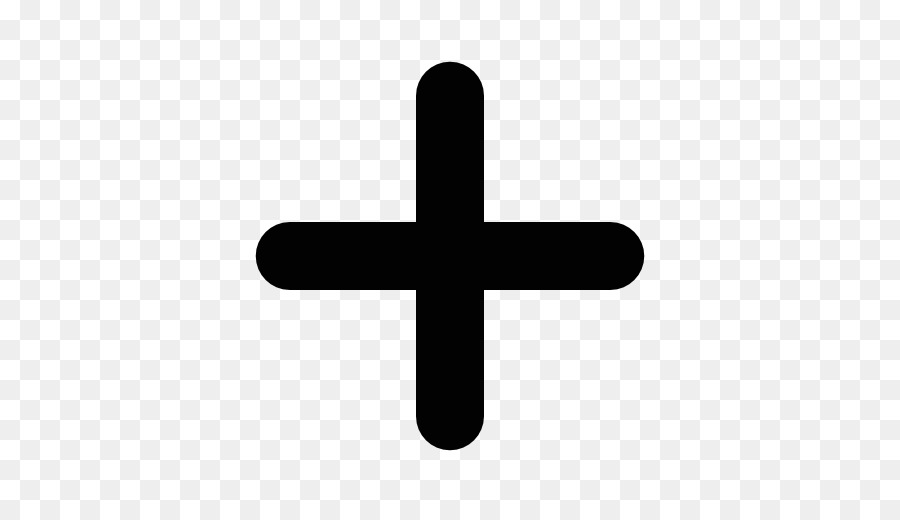

Enchiladas verdes

Por: Maria Perez
Las enchiladas verdes son un platillo que consta de
tortillas rellenas de pollo
bañadas en salsa verde. Estas van al horno con el queso gratinado
Esta receta me la vole de copiar las enchiladas del Bajio.